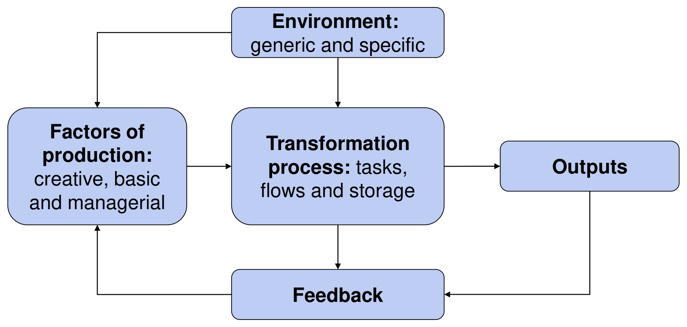
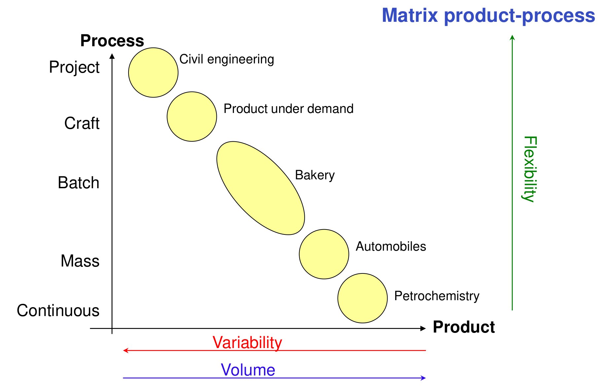
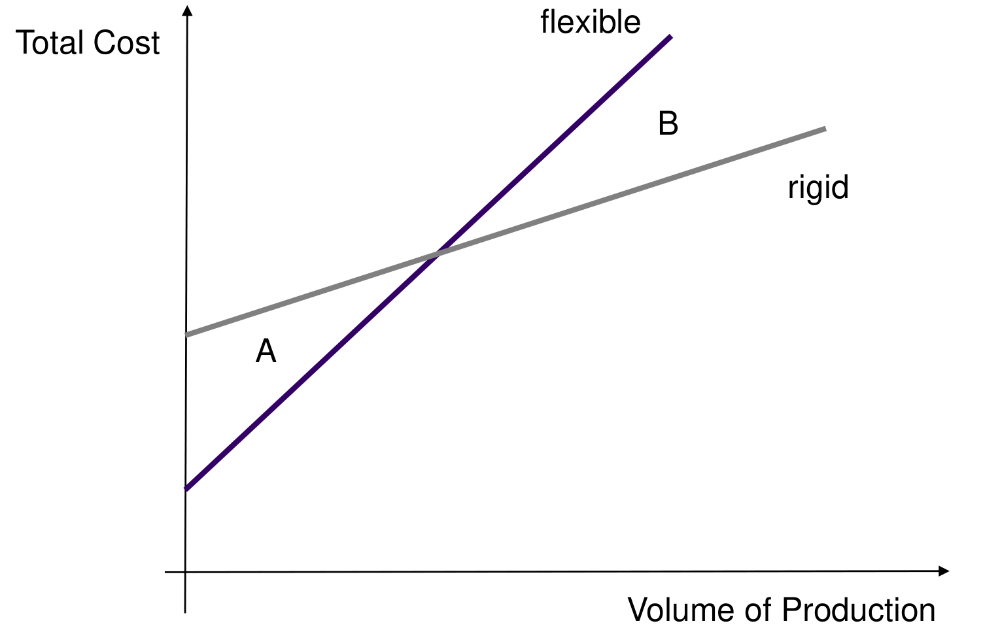
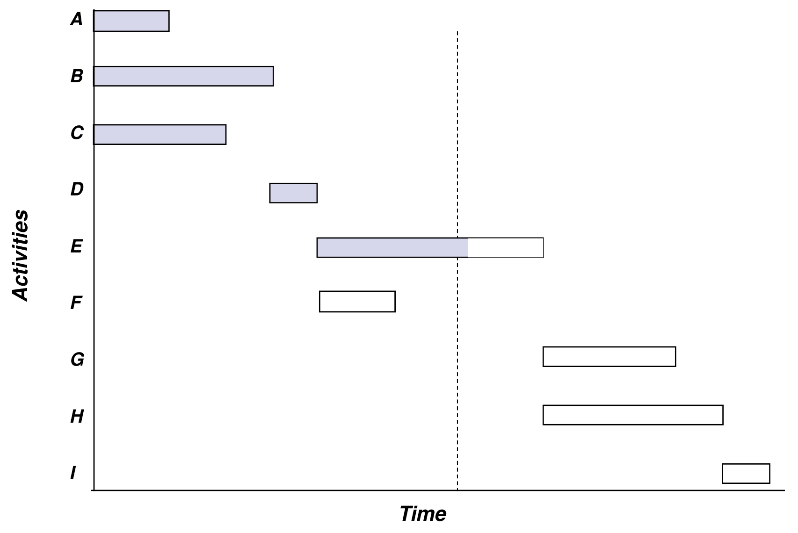
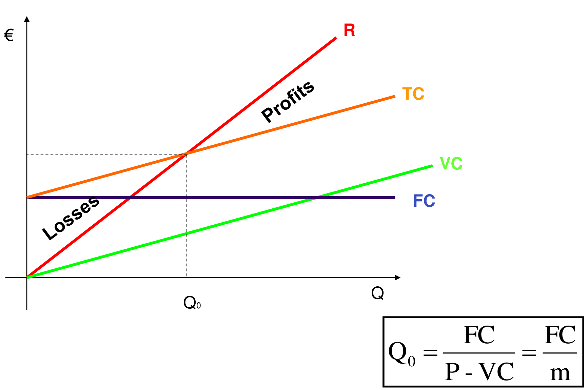
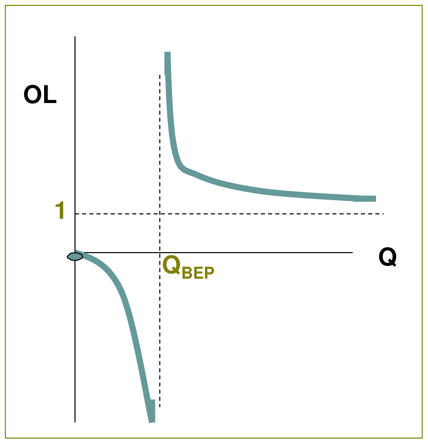

The Production Function
The production system and its objectives, rigid, flexible and Just in Time production, plant layouts, planning with Gantt charts, productivity, the break-even point, operating leverage and the margin of safety.
Central idea: a production system converts inputs into outputs, and production (operations) management plans, designs, staffs and controls it. Its objectives — cost, quality, time of delivery and flexibility — partly contradict each other, so firms choose between rigid, flexible and Just in Time systems and between three plant layouts. Production is then planned (Gantt charts) and controlled for efficiency, a posteriori with productivity indexes and a priori with cost analysis: the break-even point $Q_0 = FC/(P - VC) = FC/m$, the operating leverage $OL = Q\,m/(Q\,m - FC)$ and the margin of safety.
The topic has three parts [Slide 2]: the function of production (concept, objectives and types of production systems: rigid, flexible and Just in Time), production planning and control with the Gantt chart, and the control of efficiency.
Part I — The function of production
§ 1 Concept [Slides 3-4]
A production system is a method for converting inputs into outputs. Production management (operations management) is the set of activities aimed at planning, designing, staffing and controlling a firm's production system [Slide 3].
The system has four elements [Slide 4]: the factors of production (creative, basic and managerial), the transformation process (tasks, flows and storage), the outputs, and the feedback that returns information from the outputs to the inputs. The whole system sits inside the generic and specific environment of Topic 2.

§ 2 Objectives and their contradictions [Slides 5-6]
The function of production pursues four objectives [Slide 5]: cost, quality, time of delivery and flexibility. They can contradict each other [Slide 6]:
| Pair of objectives | Why they conflict |
|---|---|
| Cost - quality | higher quality usually needs better materials, processes and controls, which cost more |
| Flexibility - cost | producing many different products in small amounts loses the savings of standard, large-scale production |
| Time of delivery - cost | delivering faster needs spare capacity, stocks or overtime, which cost more |
The right-hand column explains the pairs in plain words; the slide names only the pairs.
Part II — Types of production systems
§ 3 Five generic types in three categories [Slides 7-9, 23]
Production systems are placed on the product-process matrix [Slide 7]: from project (civil engineering), craft (product under demand), batch (bakery) and mass (automobiles) to continuous production (petrochemistry). Towards the project end variability and flexibility grow; towards the continuous end volume grows.

The five generic types are grouped in three categories [Slides 8-9]: rigid or continuous (mass and continuous), flexible or intermittent (craft and batch) and Just in Time. The project type stands apart, with individualized products. Slide 23 summarises them:
| Type | Products and resources | Plant layout |
|---|---|---|
| Project | individualized products: high cost, qualified workers, equipment for general use, difficult planning and control | fixed |
| Craft and batch | a low quantity of a great variety of products; craft: more adaptability, less quantity; batch: more uniformity, more quantity (batch size) | functional |
| Mass and continuous | standard products for mass markets, division of labour; mass: more dependent on workers than on machines; continuous: more dependent on machines than on workers | product |
§ 4 Rigid production [Slides 10-13]
Characteristics [Slide 10]: big volumes of production, commercialization at a low price, standard products, capital intensive.
Advantages of job specialization [Slide 11]: less time to learn a task; the simplicity of the task makes learning cheaper; no time lost changing from one task to another; the worker acquires expertise; a better fit between worker and job position; easy replacement of workers (and mechanization).
Organization of the factory [Slide 12]: division of labour into different job positions, assigned by seniority, which leads to the bureaucratization of the company. Its two types are mass production and continuous or process production [Slide 13].
§ 5 Flexible or intermittent production [Slides 14-17]
Characteristics [Slide 14]: flexible volumes of production, more complex and differentiated products, more highly qualified workers, equipment for general use.
Organization [Slide 15]: plant layout based on teamwork, workers with more responsibility, fewer hierarchical levels, employee rotation, and remuneration that depends on qualification. Its two types are craft and batch production [Slide 16].
Flexible versus rigid [Slide 17]: drawn against the volume of production, the total cost of the rigid system starts higher (more fixed cost) but grows more slowly (less variable cost per unit). Below the volume where the two lines cross (zone A) the flexible system is cheaper; above it (zone B) the rigid one is.

§ 6 Just in Time [Slides 18-21]
Just in Time arose from the need to manufacture many types of automobiles, in small batches but under the same production process. It is based on requests and eliminates inventories [Slide 18]. Its competitive advantages are to manufacture high-quality products and to reduce the whole production cycle [Slide 19].
| Element [Slides 20-21] | Tool |
|---|---|
| Internal organization | job cells |
| Plant distribution | U shape |
| Mechanisms to support quality | Jidoka, Poka Yoke |
| Mechanisms of visual control | Andon, control panels, work sheets, Kanban |
The slides only name these tools.
§ 7 Plant layout [Slides 22-26]
There are three plant layouts [Slide 22]: functional or process, product and fixed.
| Layout | Advantages | Disadvantages |
|---|---|---|
| Functional or process [Slide 24] | high use of the machines; machines easily replaced; operators of similar, nearby machines can train and supervise themselves; a specific incentive system for each worker | distance between functions; handling wastes when transporting materials; the flow of materials and the operators' work are difficult to standardize and to plan; activities are difficult to plan; lines are not balanced (some saturated, others free) |
| Product [Slide 25] | little work in process; less space for transport and temporary storage; simpler planning and control; operators need little preparation; the flow of materials is easy to anticipate | inflexible; the time is set by the slowest machine (bottlenecks must be avoided); a problem in one machine affects the whole process; high investment; incentive programmes per employee are difficult to define |
| Fixed [Slide 26] | the product stays in one place and machinery, materials and labour are brought to it | — |
Part III — Production planning and control
§ 8 Planning and control [Slides 27-28]
Production planning is the determination of what products to produce and where, when and how to produce them. Production control is the effort to ensure that production plans or schedules are met [Slide 27]. The basic process has six steps [Slide 28]:
- Receiving the orders from customers.
- Developing a list of required materials.
- Developing a route sheet.
- Developing production schedules.
- Dispatching notices to operators to begin work.
- Following up to see that the schedule is being met.
§ 9 Gantt charts [Slides 29-32]
The Gantt chart, named after Henry Gantt, who developed it in the early 1900s, represents the phases and activities of a project work breakdown structure [Slide 30]. It is a bar chart that shows the scheduled start and stop dates of each production step; it is a visual illustration of times, used for non-complex projects; it normally does not show the dependency relationships between activities; and it shows the current schedule status with percent-complete shading and a vertical "TODAY" line [Slide 31].

Part IV — Control of efficiency
§ 10 Efficiency, productivity and cost analysis [Slides 33-35]
The production system is controlled for efficiency, which is not the same as efficacy [Slide 33]. Two kinds of index are used: productivity, measured a posteriori, and cost analysis, a priori.
Total productivity relates everything produced to all the factors used, and a partial productivity to one factor only [Slide 34]:
Productivity depends on external factors, factors of capacity, product factors, factors of process design, factors of human resources and quality factors [Slide 35].
§ 11 Break-even point [Slides 36-38]
The break-even point (BEP) is the volume of sales or production at which the company covers its total costs, and from which it starts to make profits; it depends on the cost structure [Slide 36].
With price $P$ per unit, variable cost $VC$ per unit, fixed costs $FC$ and volume $Q$, revenue is $R = P\,Q$ and total cost $TC = FC + VC\,Q$, so
The unit margin is $m = P - VC$. At the break-even point the profit is zero, $Q_0\,m - FC = 0$ [Slide 37]:

Slide 38 compares two cost structures with the same revenue line: case A, with higher fixed costs and a steeper profit line, and case B, with lower fixed costs and a flatter one. The break-even point moves with the cost structure.
§ 12 Operating leverage [Slides 39-41]
The operating leverage measures how a change in sales translates into a change in operating income (profit or loss) [Slide 40]. It is the relative change of the profit divided by the relative change of the volume [Slide 39]:
Since $\text{Profit} = Q\,(P - VC) - FC$ and $FC$ does not change with $Q$, $\Delta\text{Profit} = \Delta Q\,(P - VC)$. Substituting,
Interpretation [Slide 40]: with $OL = 3$, a 1% increase in sales raises profit by 3%, and a 10% fall in sales lowers profit by 30%.
Comments [Slide 41]: the OL captures the sensitivity of operating income to sales; it is an index of economic (operating) risk; it is used to compare businesses of the same sector; and, ceteris paribus, the higher the fixed costs, the higher the OL.
§ 13 Relationship between break-even point and operating leverage [Slide 42]
Since $FC = Q^*\,m$ (with $Q^*$ the break-even point), the leverage depends only on how far the volume is from the break-even point:
- Profits ($Q > Q^*$): $OL > 1$, a more than proportional effect; the closer to the break-even point, the larger the leverage.
- Losses ($Q < Q^*$): $OL \le 0$; for $OL < -1$ an amplifier (more than proportional) effect, for $-1 < OL < 0$ a less than proportional effect.

§ 14 Margin of safety [Slide 43]
The margin of safety represents the strength of the business: the amount the company is above (or below) the break-even point.
| Measured in | Formula |
|---|---|
| units | $MS = Q - Q^*$ |
| monetary units | $MS = (Q - Q^*)\,m$ |
| percentage | $MS = (Q - Q^*)/Q^*$ |
The percentage form of the slide divides by the break-even volume $Q^*$.
§ 15 Practical formulary
| Magnitude | Formula | Slide |
|---|---|---|
| Unit margin | $m = P - VC$ | 37 |
| Profit | $\text{Profit} = Q\,m - FC$ | 39 |
| Break-even point | $Q_0 = FC/m$ | 37 |
| Operating leverage | $OL = Q\,m/(Q\,m - FC) = Q/(Q - Q^*)$ | 40, 42 |
| Margin of safety | $Q - Q^*$; $(Q - Q^*)\,m$; $(Q - Q^*)/Q^*$ | 43 |
| Labour productivity | goods and services / labour | 34 |
The eight exercises of the break-even and operating leverage sheet are solved one by one in Problem Set - T4 Break-Even Point and Operating Leverage.